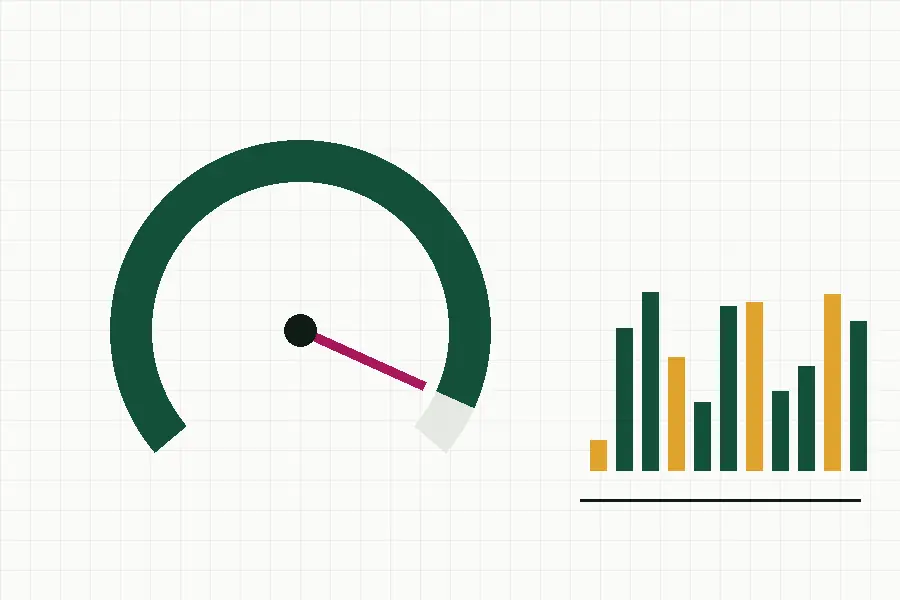

De 61 a 94 puntos sin tocar una sola línea de lógica
La auditoría móvil arrancó en 61. El costo estaba repartido en tres sitios: un archivo de fuentes servido desde un CDN externo, cuatro fotografías en PNG a resolución de escritorio y una hoja de estilos de framework de la que usaba menos del cinco por ciento. Auto-hospedé la tipografía en formato WOFF2 con font-display: swap, convertí las imágenes a WebP declarando siempre width y height para eliminar el desplazamiento acumulado, y sustituí el framework completo por su módulo de rejilla. El resultado fueron 94 puntos y 240 kB menos de transferencia.